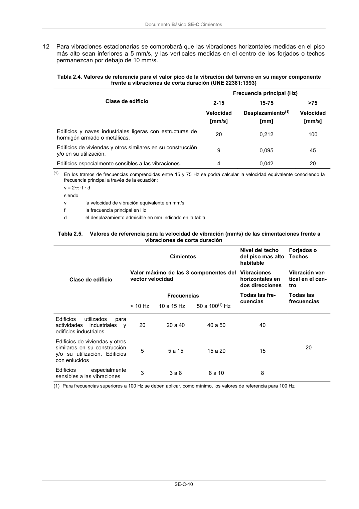

DB-SE-C Cimientos · edición 2019-12-20 · capa oficial
Documento DB-SE-C-oficial · SHA-256 del PDF a71133f4b0dca253e45ea3071c70f2a512354bcc5cd841bf89b1a502f567ac5e
Página física 15 de 165.
Copia fiel del PDF fuente · Fuente oficial
Ficha de la disposición en la fuente oficial
Formato: Texto de la página (Markdown)
Documento Básico SE-C Cimientos SE-C-10 12 Para vibraciones estacionarias se comprobará que las vibraciones horizontales medidas en el piso más alto sean inferiores a 5 mm/s, y las verticales medidas en el centro de los forjados o techos permanezcan por debajo de 10 mm/s. Tabla 2.4. Valores de referencia para el valor pico de la vibración del terreno en su mayor componente frente a vibraciones de corta duración (UNE 22381:1993) Clase de edificio Frecuencia principal (Hz) 2-15 15-75 >75 Velocidad [mm/s] Desplazamiento(1) [mm] Velocidad [mm/s] Edificios y naves industriales ligeras con estructuras de hormigón armado o metálicas. 20 0,212 100 Edificios de viviendas y otros similares en su construcción y/o en su utilización. 9 0,095 45 Edificios especialmente sensibles a las vibraciones. 4 0,042 20 (1) En los tramos de frecuencias comprendidas entre 15 y 75 Hz se podrá calcular la velocidad equivalente conociendo la frecuencia principal a través de la ecuación: v = 2· ·f · d siendo v la velocidad de vibración equivalente en mm/s f la frecuencia principal en Hz d el desplazamiento admisible en mm indicado en la tabla Tabla 2.5. Valores de referencia para la velocidad de vibración (mm/s) de las cimentaciones frente a vibraciones de corta duración Clase de edificio Cimientos Nivel del techo del piso mas alto habitable Forjados o Techos Valor máximo de las 3 componentes del vector velocidad Vibraciones horizontales en dos direcciones Vibración ver- tical en el cen- tro Frecuencias Todas las fre- cuencias Todas las frecuencias < 10 Hz 10 a 15 Hz 50 a 100(1) Hz Edificios utilizados para actividades industriales y edificios industriales 20 20 a 40 40 a 50 40 20 Edificios de viviendas y otros similares en su construcción y/o su utilización. Edificios con enlucidos 5 5 a 15 15 a 20 15 Edificios especialmente sensibles a las vibraciones 3 3 a 8 8 a 10 8 (1) Para frecuencias superiores a 100 Hz se deben aplicar, como mínimo, los valores de referencia para 100 Hz
